Judô Olímpico em Tóquio 2020: cinco coisas que você deve saber. Leia Mais... 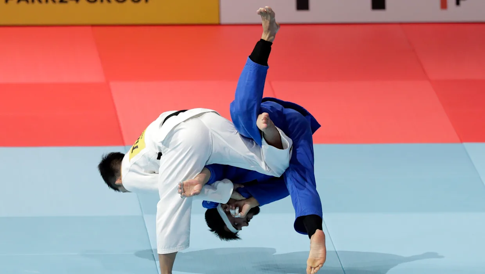 Calendário de Tóquio 2020 Judô: Horários 24 de julho. Leia Mais... 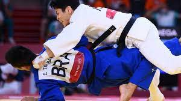 Judô: brasileiros são eliminados nas oitavas no peso-ligeiro nas Olimpíadas 2020. Leia Mais... 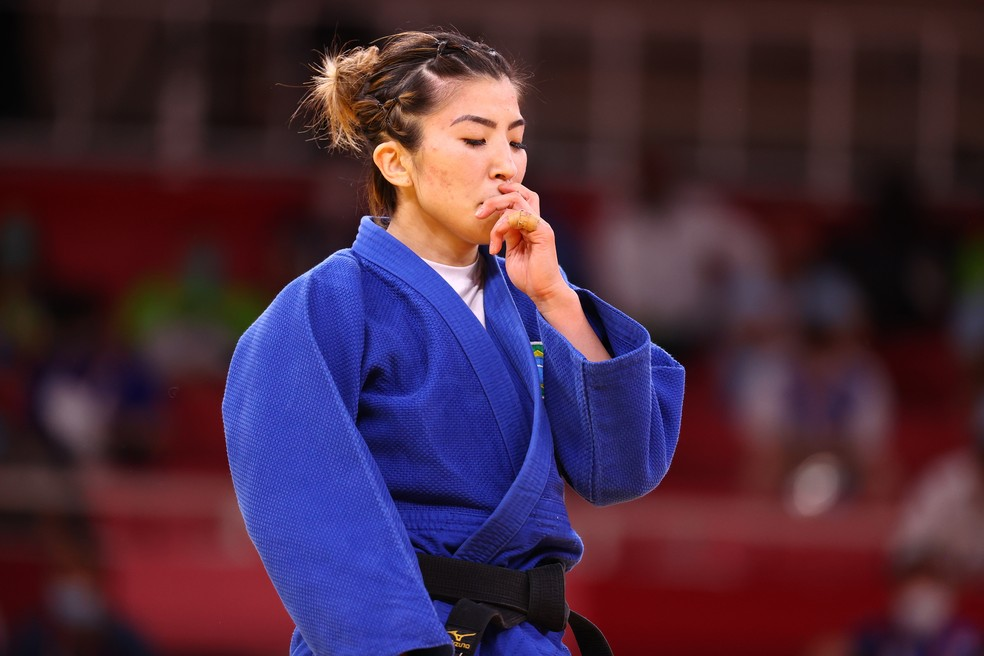 Família de ouro! Irmãos Abe vencem o peso meio-leve do judô nas Olimpíadas 2020. Leia Mais... 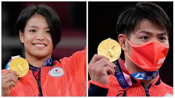 Daniel Cargnin conquista primeiro bronze do Brasil nas Olimpíadas 2020. Leia Mais... 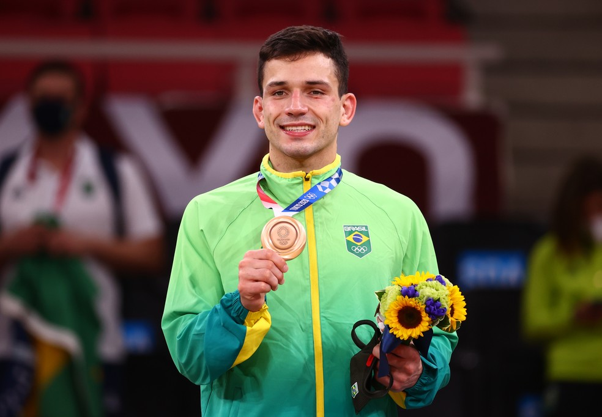 Confira abaixo alguns dos melhores momentos do Judô:
 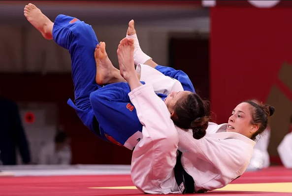
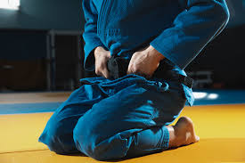
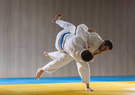
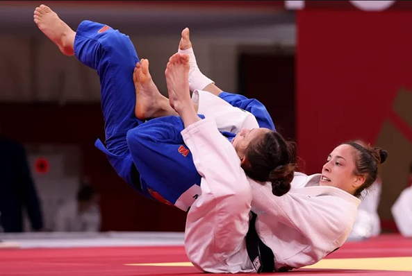
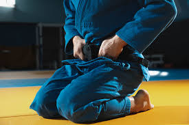
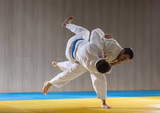
 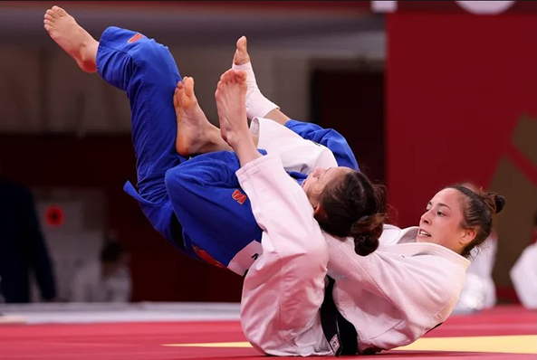
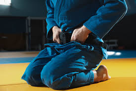
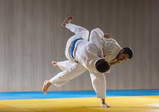
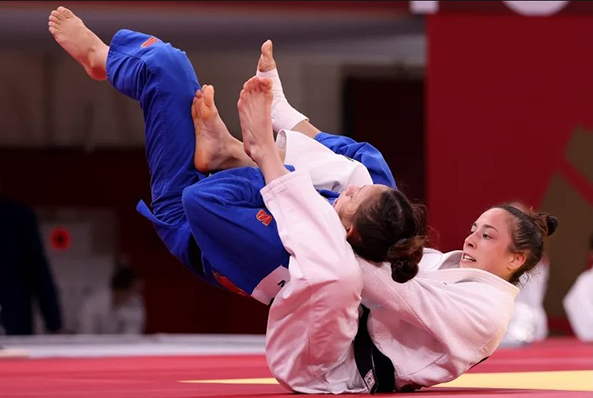
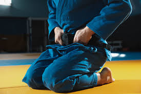
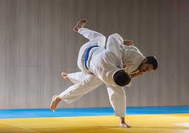